Part 1: Light Sampling
It took about 3 days to finish this part.It took me much more time to understand the definition of distant disk light. And I aslo spent a lot of time to understand the code base, like how to use the class discretePDF and how to set the mesh of an emitter, etc.
I have pasted all the required tests.xml in the Validation.
sphere_ao_ems.xml scene Comparison
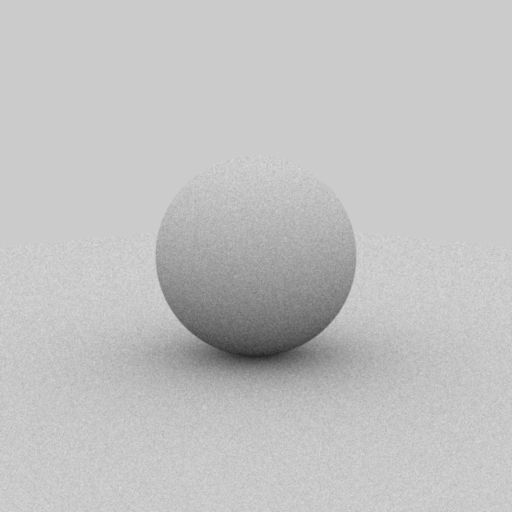
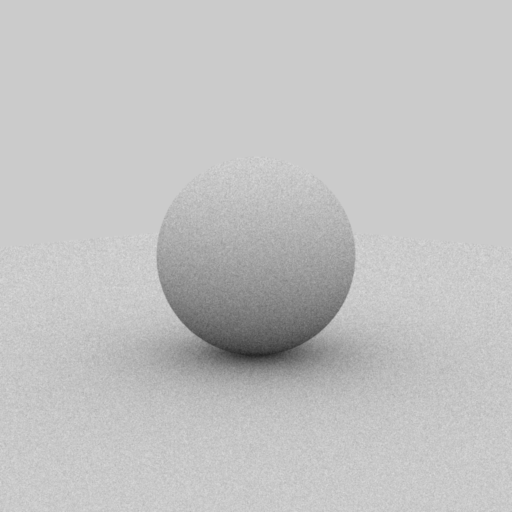
sphere_side_ems.xml scene Comparison
Part 2: BRDF Sampling
It took about 2 days to finish this part. I spent most of the time for review these equations and the debug things. And the answers on piazza are really helpful for me to fix some issues.
I have passed all the required tests.xml in the validation.
Warptest Result for BRDF Sampling
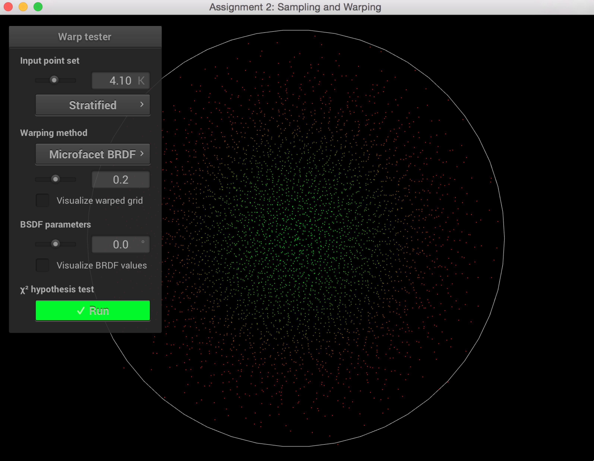
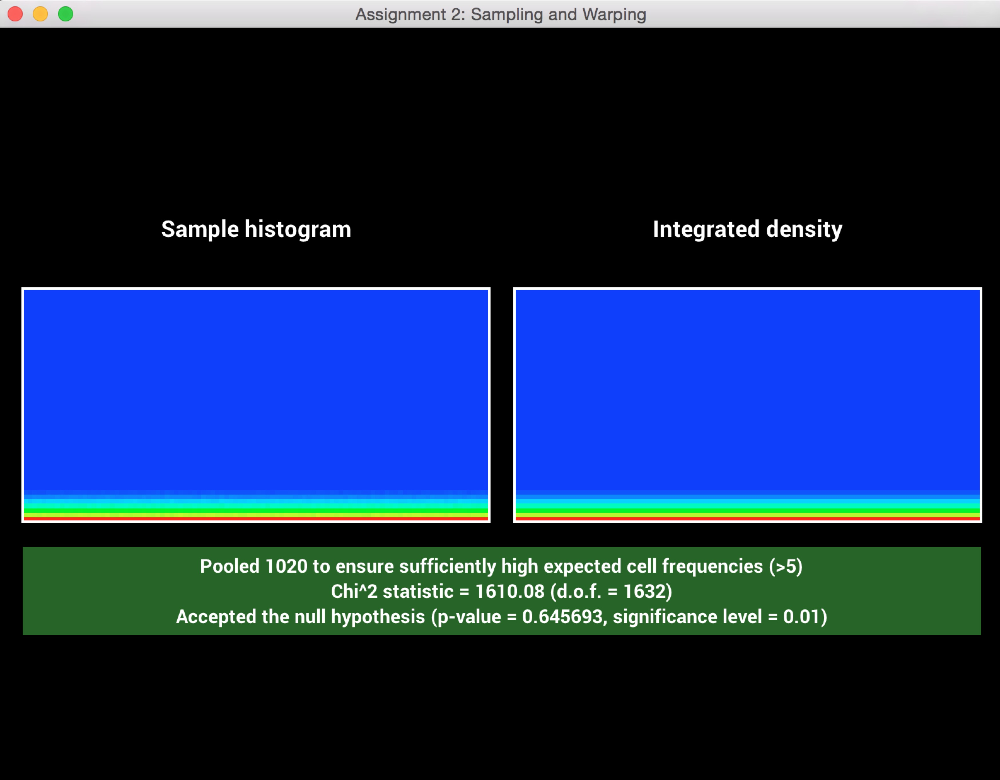
sphere_ao_mats.xml scene Comparison
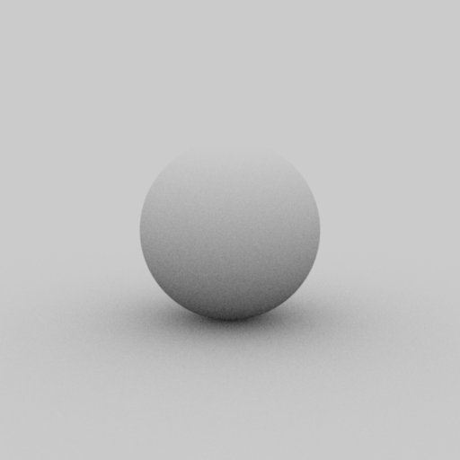
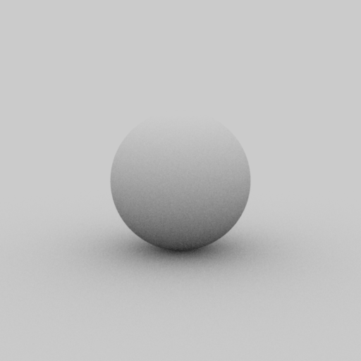
sphere_side_mats.xml scene Comparison
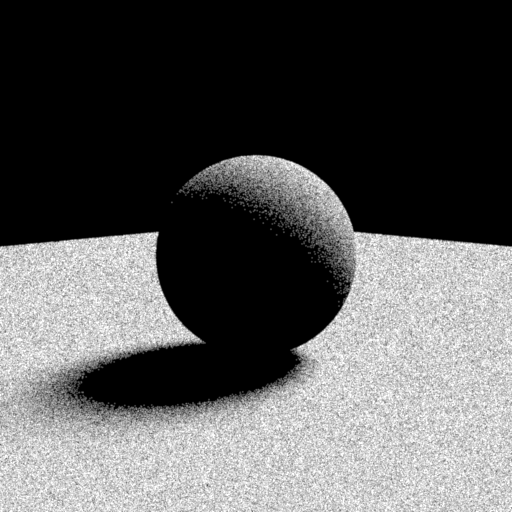
odyssey_mats.xml scene Comparison
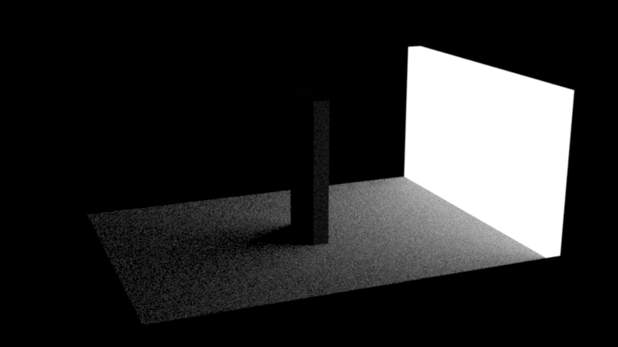
odyssey_mats.xml scene Comparison
The scene I rendered is darker than the reference one. And I really tried to find the problem but still haven't fixed it. It took me all night to check where has the problem but still failed.
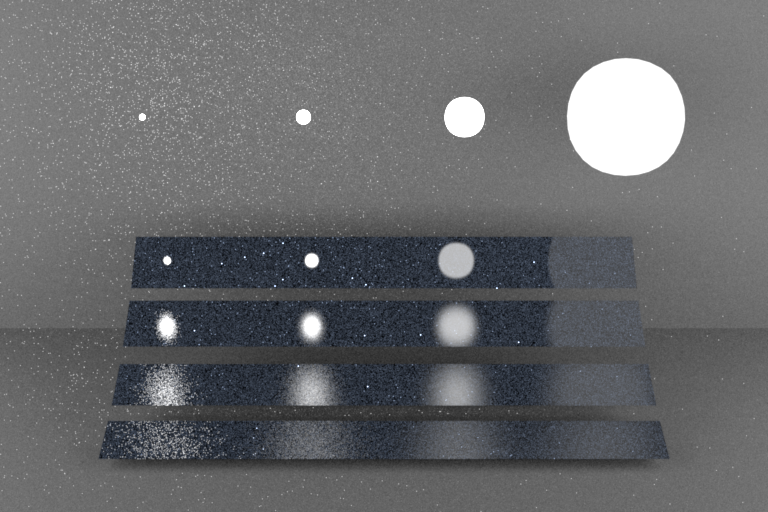
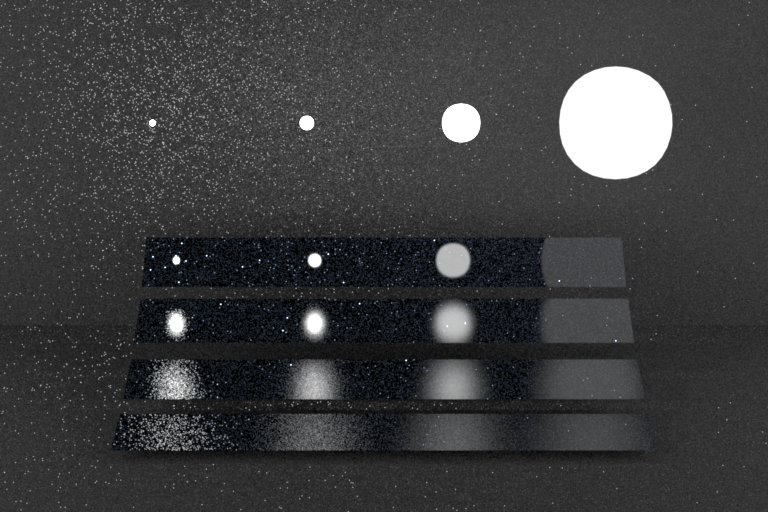
Part 3: Multiple Importance Sampling
It took about 3 hours to finish this part, but I spent at lease 1 day to check where I am doing a wrong thing. Most of the time are debugging. So I haven't past the tests.xml in validation. But the sphere and odyssey scenes all worked well.
sphere_ao_ems.xml direct_ems Integrator VS Mis Reference
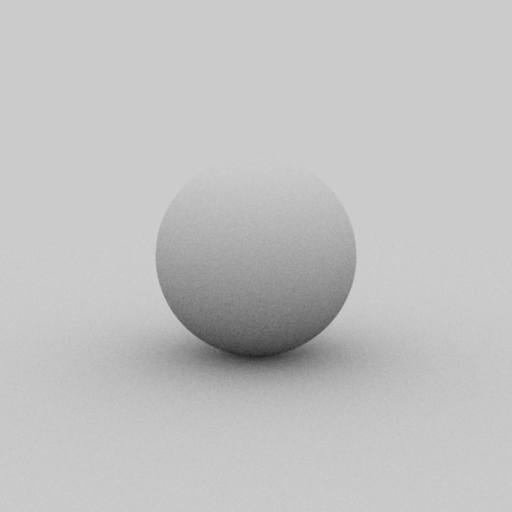
sphere_ao_mats.xml direct_mats Integrator VS Mis Reference
sphere_ao_mis.xml direct_mis integrator VS Mis Reference
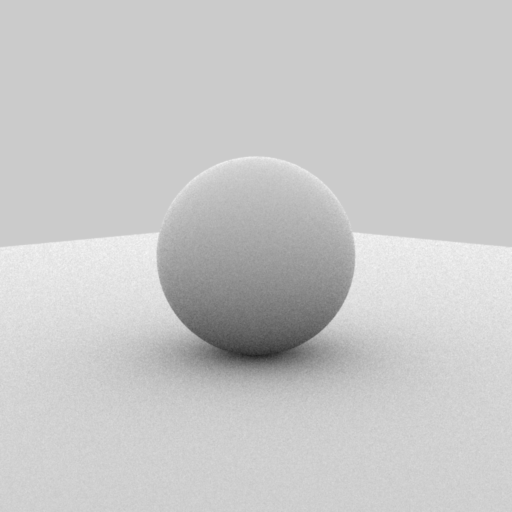
sphere_side_ems.xml direct_ems Integrator VS Mis Reference
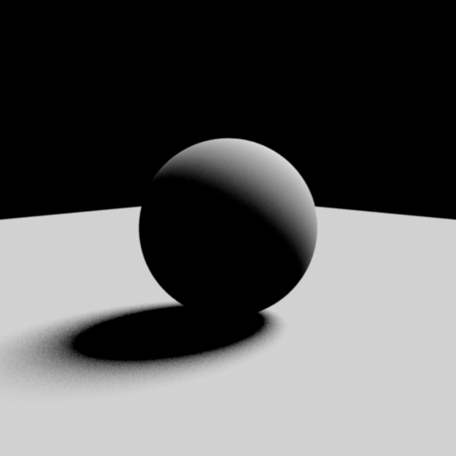
sphere_side_ems.xml direct_mats Integrator VS Mis Reference
sphere_side_ems.xml direct_mis Integrator VS Mis Reference
odyssey/odyssey_ems.xml direct_ems Integrator VS Mis Reference
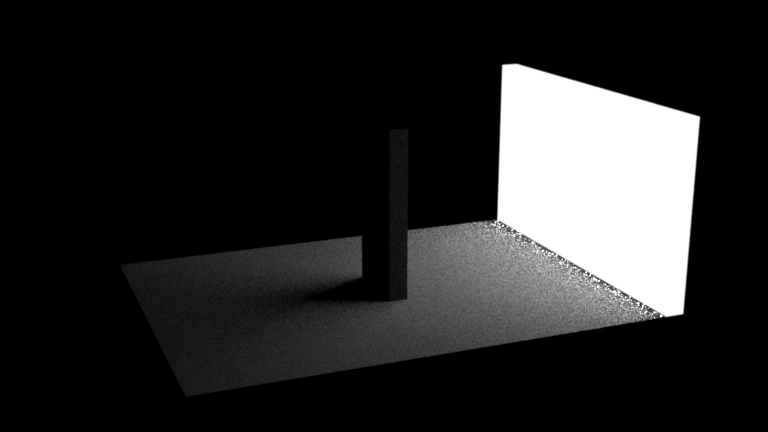
odyssey/odyssey_mats.xml direct_mats Integrator VS Mis Reference
dyssey/odyssey_mis.xml direct_mis Integrator VS Mis Reference
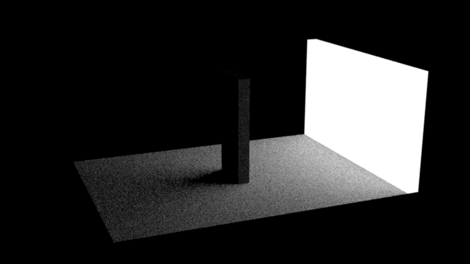
veach_mi/veach_ems.xml direct_ems Integrator VS Mis Reference
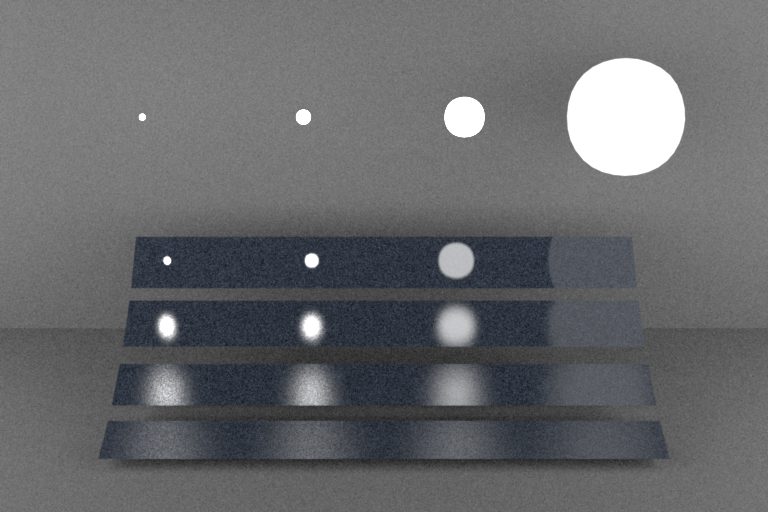
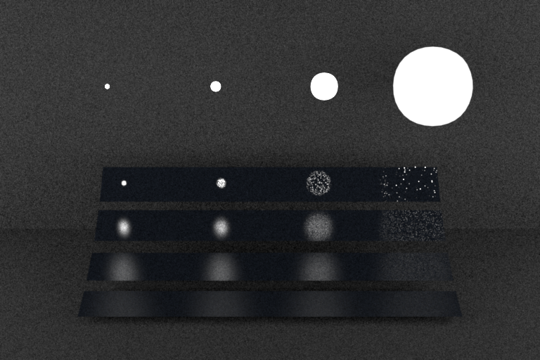
veach_mi/veach_mats.xml direct_mats Integrator VS Mis Reference
veach_mi/veach_mis.xml direct_mis Integrator VS Mis Reference
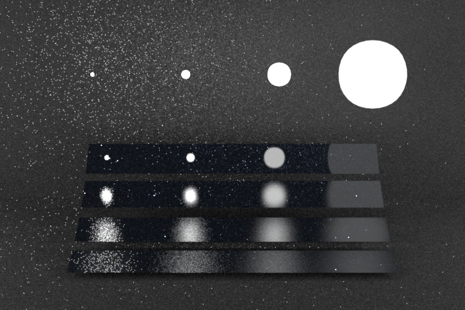
Part 4: Itresting Scene
I actually want to generat a image ajax is on a stage and lighted by some emitters. And then I want to make a simulated moon emitter.This is my result.
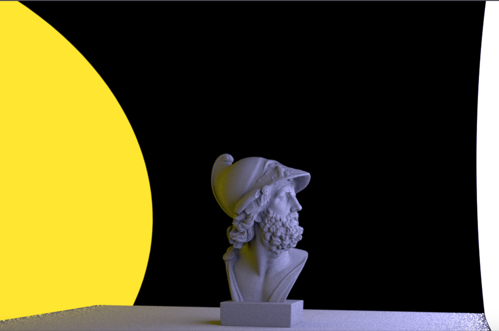